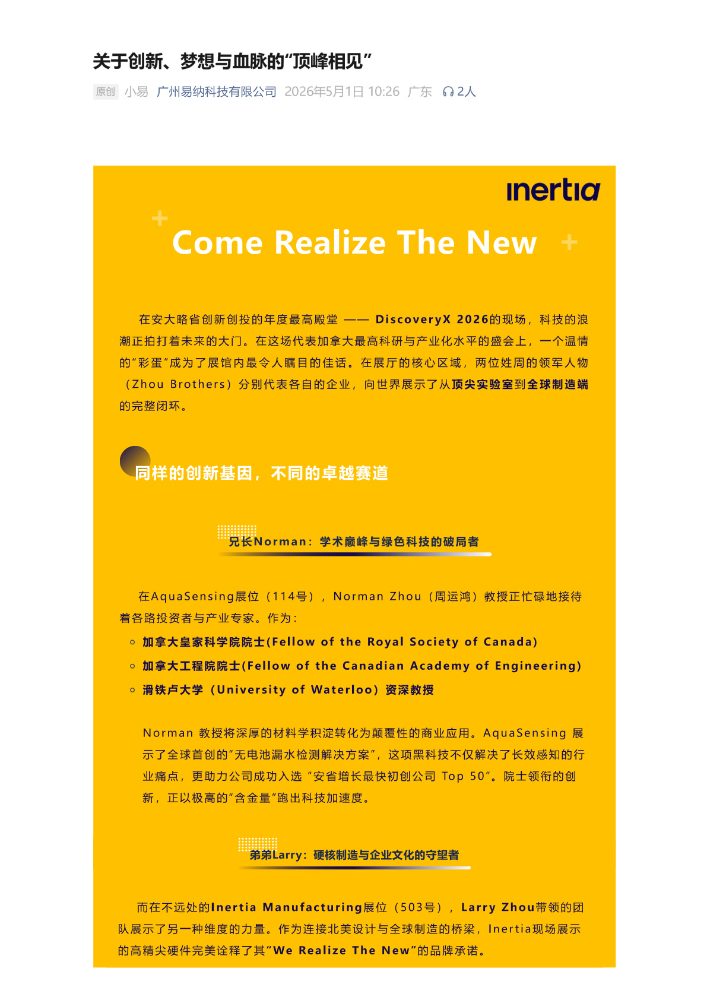
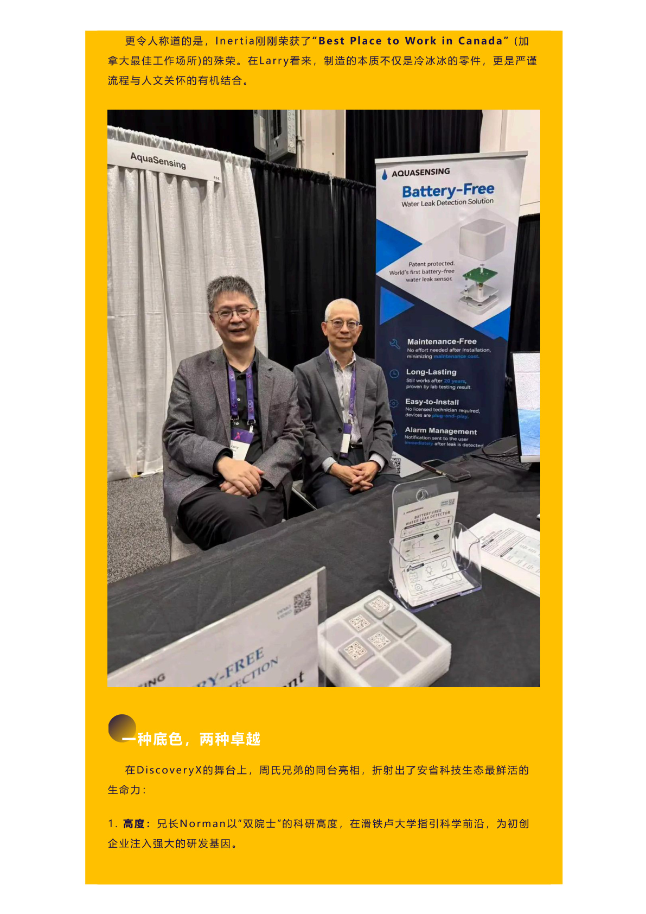
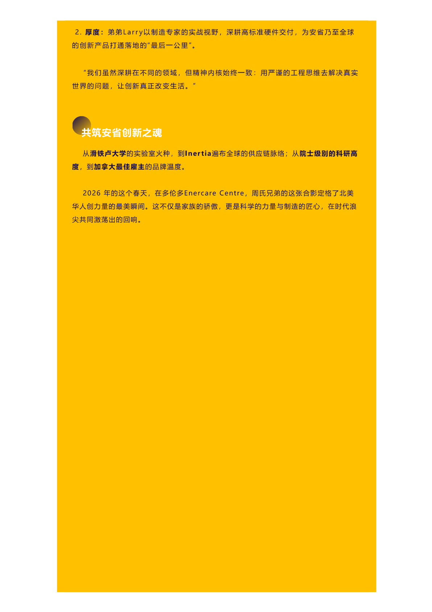
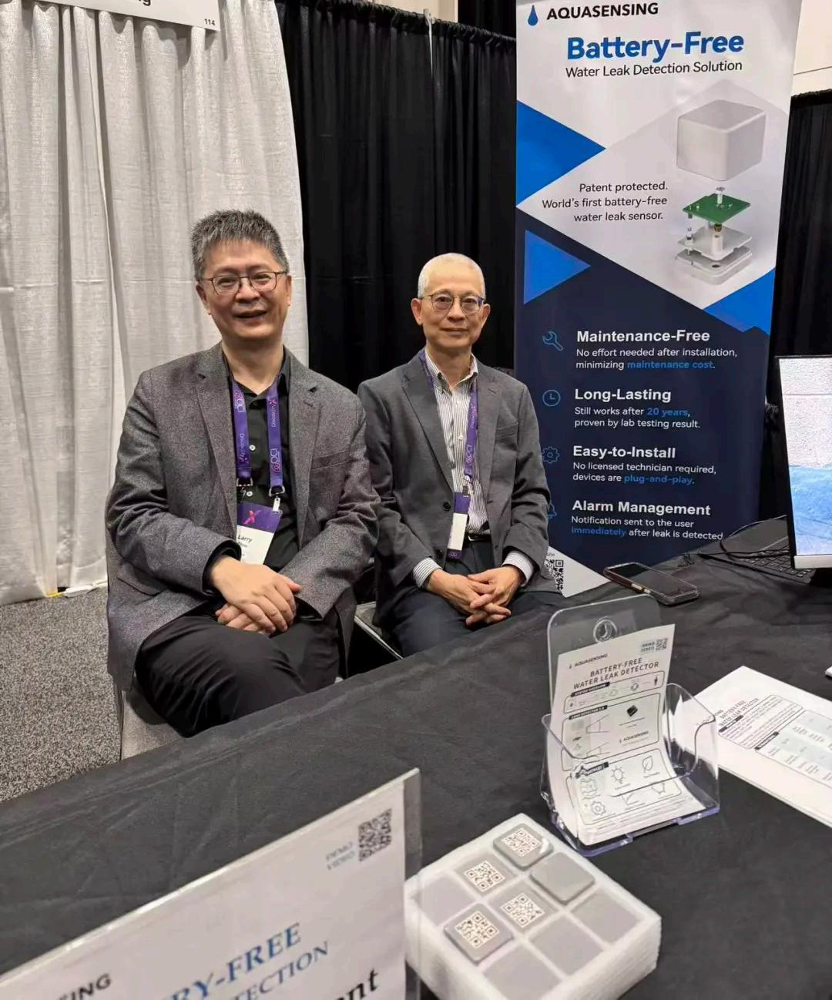
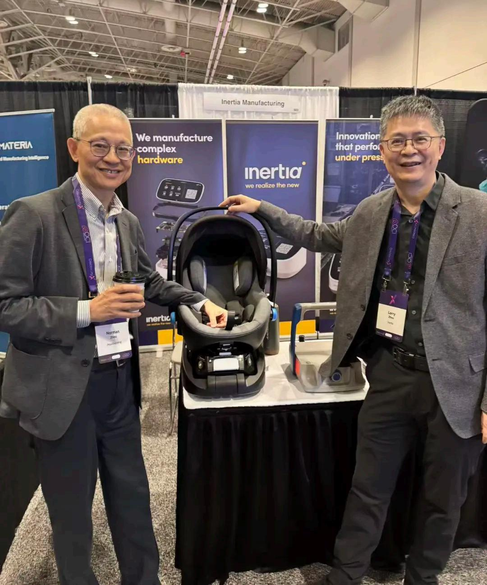
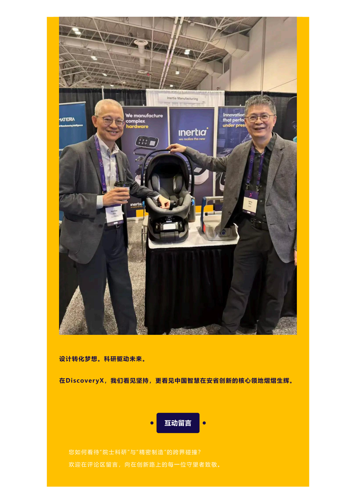
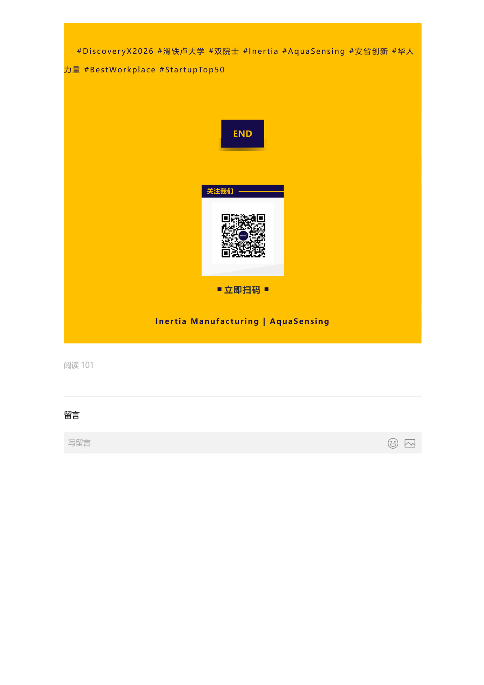

This piece is dedicated to every colleague quietly building across Inertia's two cities, and to everyone who believes that innovation is about more than technology — it's about the human heart.

What drives a group of people to give their all, day after day, on the long and demanding road of medical device manufacturing? Is it the technology itself? The commercial returns? At Inertia, our answer may be a little different — it's about dreams, about legacy, about that belief that one day we will "meet at the summit."

Part 1 Innovation Often Begins with One Person's Dream
The Inertia story began with one engineer's dream. Our founder, drawing on decades of experience in the North American medical device industry, saw a truth the industry had overlooked: China's manufacturing didn't lack capacity — it lacked the ability to translate design language precisely into manufacturing language. That cross-cultural engineering capability — fluent in North American medical device regulations, design thinking, and quality standards, yet equally at home on China's factory floor, understanding materials and process boundaries — was the missing piece.
This dream was neither small nor grandiose. It wasn't about chasing valuations on the latest hype cycle. It was about rolling up your sleeves and building a bridge between two worlds, inch by inch.

Part 2 A Dream Endures Through the Legacy of Many
One person's dream can spark a flame, but only a team's shared legacy can turn it into a blaze. At Inertia, "legacy" is not an abstract metaphor — it's the persistence of the Toronto office on a video call at 3 AM debugging with the Guangzhou production line, it's the patience of Guangzhou engineers running mold trials a dozen times over for a 0.01mm tolerance, it's the默契 of project managers switching seamlessly between Chinese and English to dissolve cultural friction.



We often say Inertia's culture is an "engineering culture" — but that's only half the story. The exterior of engineering culture is rigor, data, and an uncompromising attention to detail. Its core, however, is something deeper: the trust we have in each other, the默契 of "your challenge is my challenge," the sense of belonging that persists across ten thousand kilometers.
This culture isn't written on the walls. It lives in every moment someone steps forward and says "I've got this," and in every success where everyone says, from the heart, "we did this together."
Innovation is not a flash of accidental brilliance. It's a group of people climbing their own mountains, day after day, until the clouds part and they meet at the summit.
Part 3 "Meeting at the Summit" — Our Shared Destination
"Meeting at the summit" carries a special meaning at Inertia. It's not just a hope for success — it describes how we work: each person reaching the peak of their own discipline, each person climbing their own mountain well, then converging at the top.

The design team climbs the summit of creativity. They keep asking: can this structure be simpler? Can this user experience be more intuitive? Can this appearance retain warmth and beauty while meeting the rigor demanded by medical devices?
The manufacturing team climbs the summit of precision. They wrestle in the micron-scale world, deliberating over mold temperature curves, validating every process parameter — because they know every decision on the production line is ultimately etched into every device a patient uses.
The quality team climbs the summit of trust. Behind every inspection report is a complete quality management system in motion. ISO 13485 is not a certificate on the wall — it's discipline embedded in every process.
When these three teams reach sufficient heights on their respective mountains, they see each other above the clouds — that's the moment of "meeting at the summit." What's born in that moment is what we call innovation.

Part 4 A Closing Word — To Every Fellow Traveler Chasing a Dream
The medical device industry has never been an easy road. Long cycles, high barriers, zero tolerance for error. Every regulation is a ridge that must be crossed, every certification a fortress that must be taken. But precisely because of this, the field draws together people who genuinely love engineering and hold deep reverence for life.

Dreams, legacy, meeting at the summit — these three words form the spiritual coordinates of Inertia. Dreams give direction. Legacy provides strength. Meeting at the summit is our promise to one another. Innovation is never one person's lonely journey — it's a shared expedition.
If you also believe that engineering is a craft that can turn dreams into reality, if you too are willing to keep your feet on the ground and perfect every detail, then perhaps we will meet on some mountain peak. The summit may not be the destination, but the climb itself is the meaning. Thank you to every one of you walking this path with Inertia.